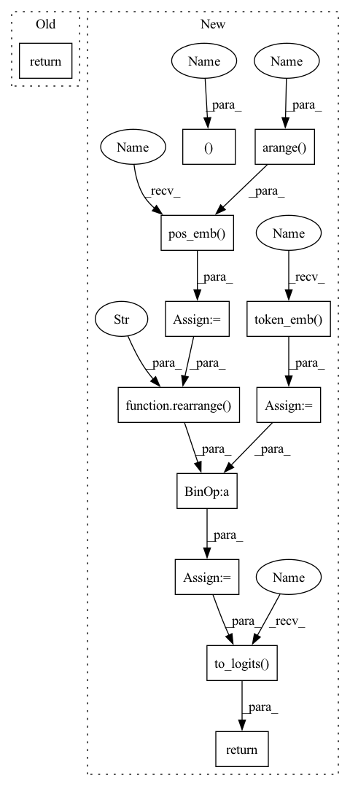

Pattern ID :40188
Before Change
super().__init__()
def forward(self, x):
return x
After Change
)
def forward(self, x, mask = None):
b, n, device = *x.shape, x.device
x = self.token_emb( x)
pos_emb = self.pos_emb( torch.arange(n , device = device))
pos_emb = rearrange( pos_emb, "n d -> () n d" )
x = x + pos_emb
x = rearrange(x, "b n d -> b d n")
for attn, ff in self.layers:
x = attn(x) + x
x = ff(x) + x
return self.to_logits( x)
In pattern: SUPERPATTERN
Frequency: 5
Non-data size: 12
Instances Fragment ID: 114172622
Project Name: lucidrains/multistream-transformers
Commit Name: 86dac4546b311f7fe7192762abb8979f45722d53
Time: 2021-07-29
Author: lucidrains@gmail.com
File Name: multistream_transformers/multistream_transformers.py
M Class Name: MultistreamTransformer
N Class Name: MultistreamTransformer
M Method Name: forward(3)
N Method Name: forward(2)
M Parent Class: nn.Module
N Parent Class: nn.Module
M File Name: multistream_transformers/multistream_transformers.py
N File Name: multistream_transformers/multistream_transformers.py
M Start Line: 19
M End Line: 19
N Start Line: 120
N End Line: 134
Before Change
super().__init__()
def forward(self, x):
return x
After Change
)
def forward(self, x, mask = None):
b, n, device = *x.shape, x.device
x = self.token_emb( x)
pos_emb = self.pos_emb( torch.arange( n, device = device))
pos_emb = rearrange( pos_emb, "n d -> () n d" )
x = x + pos_emb
x = rearrange(x, "b n d -> b d n")
for attn, ff in self.layers:
x = attn(x) + x
x = ff(x) + x
return self.to_logits( x)
Fragment ID: 114172623
Project Name: lucidrains/multistream-transformers
Commit Name: 86dac4546b311f7fe7192762abb8979f45722d53
Time: 2021-07-29
Author: lucidrains@gmail.com
File Name: multistream_transformers/multistream_transformers.py
M Class Name: MultistreamTransformer
N Class Name: MultistreamTransformer
M Method Name: forward(3)
N Method Name: forward(2)
M Parent Class: nn.Module
N Parent Class: nn.Module
M File Name: multistream_transformers/multistream_transformers.py
N File Name: multistream_transformers/multistream_transformers.py
M Start Line: 19
M End Line: 19
N Start Line: 120
N End Line: 134
Before Change
super().__init__()
def forward(self, x):
return x
After Change
x,
mask = None
):
n, device = x.shape[1], x.device
x = self.token_emb( x)
pos_emb = self.pos_emb( torch.arange( n, device = device))
x = x + rearrange( pos_emb, "n d -> () n d" )
for attn, ff in self.layers:
x = attn(x, mask = mask) + x
x = ff(x) + x
return self.to_logits( x)
Fragment ID: 114172618
Project Name: lucidrains/fast-transformer-pytorch
Commit Name: a67157f6405ad4bdce53b0219027cd90a0d3a7b1
Time: 2021-08-23
Author: lucidrains@gmail.com
File Name: fast_transformer_pytorch/fast_transformer_pytorch.py
M Class Name: FastTransformer
N Class Name: FastTransformer
M Method Name: forward(3)
N Method Name: forward(2)
M Parent Class: nn.Module
N Parent Class: nn.Module
M File Name: fast_transformer_pytorch/fast_transformer_pytorch.py
N File Name: fast_transformer_pytorch/fast_transformer_pytorch.py
M Start Line: 18
M End Line: 18
N Start Line: 145
N End Line: 156
Before Change
super().__init__()
def forward(self, x):
return x
After Change
)
def forward(self, x, mask = None):
n, device = x.shape[1], x.device
x = self.token_emb( x)
pos_emb = self.pos_emb( torch.arange( n, device = device))
x = x + rearrange( pos_emb, "n d -> () n d" )
if self.training:
// training mode
for _ in range(self.train_max_steps):
x, halt_logits = self.block(x)
return self.to_logits( x)
else:
// evaluation mode
for _ in range(self.train_max_steps): Fragment ID: 114172619
Project Name: lucidrains/ponder-transformer
Commit Name: 8ff8c53083298ba5809d55a8b36173d8b010138f
Time: 2021-08-26
Author: lucidrains@gmail.com
File Name: ponder_transformer/ponder_transformer.py
M Class Name: PonderTransformer
N Class Name: PonderTransformer
M Method Name: forward(3)
N Method Name: forward(2)
M Parent Class: nn.Module
N Parent Class: nn.Module
M File Name: ponder_transformer/ponder_transformer.py
N File Name: ponder_transformer/ponder_transformer.py
M Start Line: 12
M End Line: 12
N Start Line: 153
N End Line: 172
Before Change
super().__init__()
def forward(self, x):
return x
After Change
)
def forward(self, x):
n, device = x.shape[1], x.device
x = self.token_emb( x)
for attn, ff in self.layers:
x = attn(x) + x
x = ff(x) + x
pos_emb = self.pos_emb( torch.arange( n, device = device))
x = x + rearrange( pos_emb, "n d -> () n d" )
return self.to_logits( x)
Fragment ID: 114172612
Project Name: lucidrains/triton-transformer
Commit Name: 4251b68569f927c7b1f9429cc5ba656cbf7b57a4
Time: 2021-09-15
Author: lucidrains@gmail.com
File Name: triton_transformer/triton_transformer.py
M Class Name: Transformer
N Class Name: Transformer
M Method Name: forward(2)
N Method Name: forward(2)
M Parent Class: nn.Module
N Parent Class: nn.Module
M File Name: triton_transformer/triton_transformer.py
N File Name: triton_transformer/triton_transformer.py
M Start Line: 14
M End Line: 14
N Start Line: 79
N End Line: 90
Before Change
super().__init__()
def forward(self, x):
return x
After Change
):
assert not (return_loss and not self.training), "must be training if returning loss"
n, device = seq.shape[-1], seq.device
// use 0 as bos
seq = F.pad(seq, (1, 0), value = 0)
// if training, derive labels
if return_loss:
seq, labels = seq[:, :-1], seq[:, 1:]
// embed both sequence and retrieved chunks
embed = self.token_emb( seq)
retrieved = self.token_emb(retrieved)
// get positional embedding
pos_emb = self.pos_emb( torch.arange( n, device = device))
pos_emb = rearrange( pos_emb, "n d -> 1 n d" )
embed = embed + pos_emb
logits = self.to_logits( embed)
if not return_loss:
return logits
loss = F.cross_entropy(rearrange(logits, "b n c -> b c n"), labels)
return loss Fragment ID: 114172628
Project Name: lucidrains/retro-pytorch
Commit Name: e737b0c407799969e66abe02d9071e6459c629a0
Time: 2022-01-17
Author: lucidrains@gmail.com
File Name: retro_pytorch/retro_pytorch.py
M Class Name: RETRO
N Class Name: RETRO
M Method Name: forward(4)
N Method Name: forward(2)
M Parent Class: nn.Module
N Parent Class: nn.Module
M File Name: retro_pytorch/retro_pytorch.py
N File Name: retro_pytorch/retro_pytorch.py
M Start Line: 15
M End Line: 16
N Start Line: 66
N End Line: 101